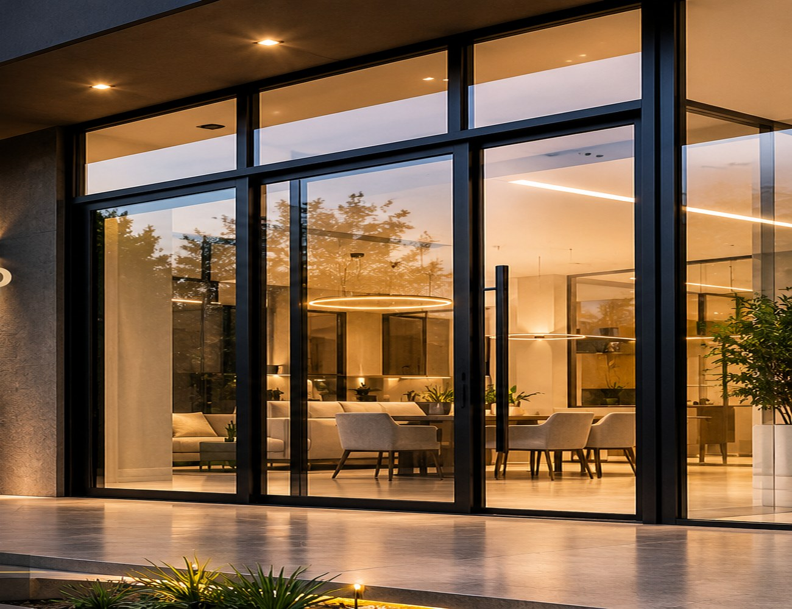
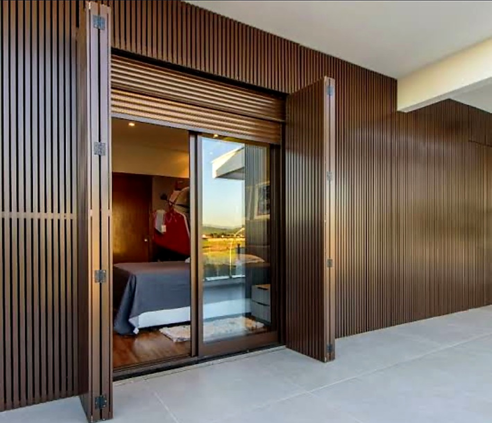

Arquitetura · Luz Natural
Integração entre ambientes e paisagem
Grandes superfícies envidraçadas que ampliam a entrada de luz e valorizam a arquitetura.
Esquadrias de alumínio desenvolvidas sob medida para integrar arquitetura, funcionalidade e acabamento em cada ambiente.
Explore referências de fachadas, entradas e grandes aberturas. Cada solução pode ser pensada de acordo com a arquitetura e a necessidade do projeto

Grandes superfícies envidraçadas que ampliam a entrada de luz e valorizam a arquitetura.

Porta camarão ripada vazada com persiana integrada, unindo privacidade, ventilação e presença arquitetônica
Imagens ilustrativas de referências arquitetônicas. Não representam, necessariamente, obras executas pela Alumi Form.
A ALUMI FORM é dedicada ao desenvolvimento e à fabricação de esquadrias de alumínio sob medida. Nosso propósito é transformar necessidades e referências arquitetônicas em soluções que unam estética, funcionalidade e cuidado técnico.
Entendemos que cada projeto tem suas particularidades. Por isso, valorizamos a atenção às medidas, às especificações, aos materiais e ao acabamento, para que a esquadria faça parte da arquitetura de forma natural e bem resolvida.
Uma boa entrega começa com entendimento claro do projeto e segue com atenção em cada fase de desenvolvimento e fabricação.
Conhecer o ambiente, as medidas, as especificações e o resultado esperado.
Definir a composição da esquadria considerando estética, funcionalidade e aplicação.
Transformar o projeto em produto com atenção aos detalhes e à qualidade final.